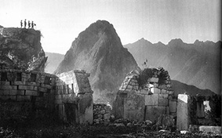
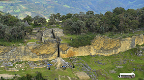
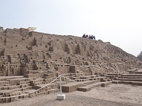
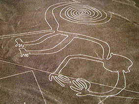
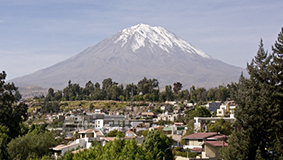
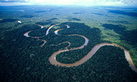
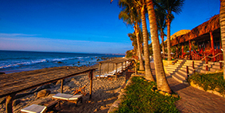

Rutes
Cusco: el temps passa de pressa perquè hi ha tant per conèixer que la seva estada li semblarà curta. L’antiga capital del Tahuantinsuyo és una ciutat d’intensos contrastos i la seducció que exerceixen les seves magnífiques muralles inques, coronades per balcons i teulades d’influència espanyola.
Kuelap: al cim dels Andes amazònics del nord del Perú, a 3.000 metres sobre el nivell del mar, es troba l’imponent Complex Arqueològic Kuelap, construïda pels Chachapoya, cultura pre inca que es va desenvolupar l’any 800 dC al 1470 dC.
Ruta Moche: a la costa nord del Perú, comprenent principalment les Regions de la Llibertat i Lambayeque es troba La “Ruta Moche,” espai geogràfic on va florir l’excepcional cultura Moche, entre els anys 100 i 800 dC.
Línies de Nazca: un conjunt de línies solcades a la terra situades a la pampa de Socos prop de Nazca. Línies que només es poden veure des de l’aire si realment volem veure la seva majestuositat, però si arribem amb la butxaca molt ajustada, el podem observar algunes d’elles des d’un mirador.
Arequipa, Canons i Volcans Arequipa: “Patrimoni Cultural de la Humanitat”, combina arquitectura colonial amb bellesa paisatgista del camp i dels seus canons Colca i Cotahuasi, en els pobles es conserven cultures ancestrals.
Amazones: és considerat el riu més cabalós i llarg del món que neix en els cims nevats de la província de Caylloma, al departament d’Arequipa. La seva conca hidrogràfica és la més gran del món i li brinda vida a l’Amazònia, la selva tropical més extensa del planeta i un dels principals pulmons de la Terra.
Platges del Nord: si vol escapar-se de la vida quotidiana, res com visitar les extenses platges al Perú de tèbies aigües que ofereixen serveis turístics complets, com les Platges de Tombis, o conegudes platges en l’àmbit internacional, com Máncora, paradís del surf i d’aquells que van buscant un ambient més tranquil i de rela.
Llac Titicaca: paisatge de contrastos generat per l’altiplà i el llac navegable més alt del món; en l’entorn s’expressa la cultura viva de manera material i immaterial. Una destinació ideal per visitar illes, recórrer penínsules i navegar de diverses formes.